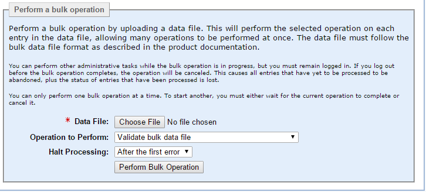
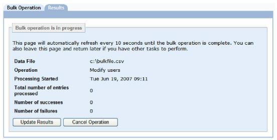
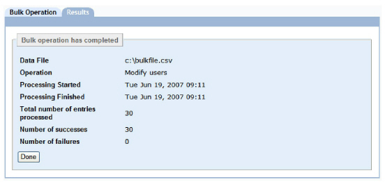

|
IdentityGuard Server 11.0 Administration Guide |
|
IdentityGuard Server 11.0 Administration Guide |
The following procedure describes the steps to perform in running bulk files in the Administration interface.
To perform a bulk operation in the Administration interface
1. Create a bulk file. See Create a bulk file.
2. Log in to the Administration interface.
3. Click Bulk Operations.
The Bulk Operations page appears.

4. Click the Bulk Operation tab.
5. Click the Browse button to locate the bulk file.
6. From the Operation to Perform drop-down list, select a bulk operation.
7. From the Halt Processing drop-down list, select the number of errors to allow before processing stops due to too many errors.
● After the first error — Just one error stops all subsequent operations from being processed.
● For the other options, After 10 errors, After 50 errors, and After 100 errors, the operations that have errors up to the specified number are tracked and not processed. However, all successful operations prior to the specified number of errors threshold are processed. All operations after the processing reaches the maximum number of errors specified are not processed.
8. Click Perform Bulk Operation.
If you selected a delete operation (for example, you selected Delete Users), a dialog box appears. Click OK.
The Bulk Operation in Progress pane appears. The size of your bulk operation directly affects the time the operation takes to process. This page indicates the initial status of the operation.

9. (Optional) While Entrust IdentityGuard processes the bulk file, you can perform either of the following actions:
● Update Results To view the current status of the bulk operation, click . (The Results page is also updated automatically every 10 seconds.)
● Cancel Operation To stop processing the bulk file.
Note: If you cancel a bulk operation, Entrust IdentityGuard keeps all changes it made up to the point of cancellation. You cannot undo a bulk operation. A canceled bulk operation may result in a partially complete operation. Performing a subsequent bulk operation on the bulk file may result in errors if Entrust IdentityGuard attempts to overwrite existing data.
When Entrust IdentityGuard completes the bulk operation, the Results page appears.

10. Click Done to return to the Bulk Operation page.